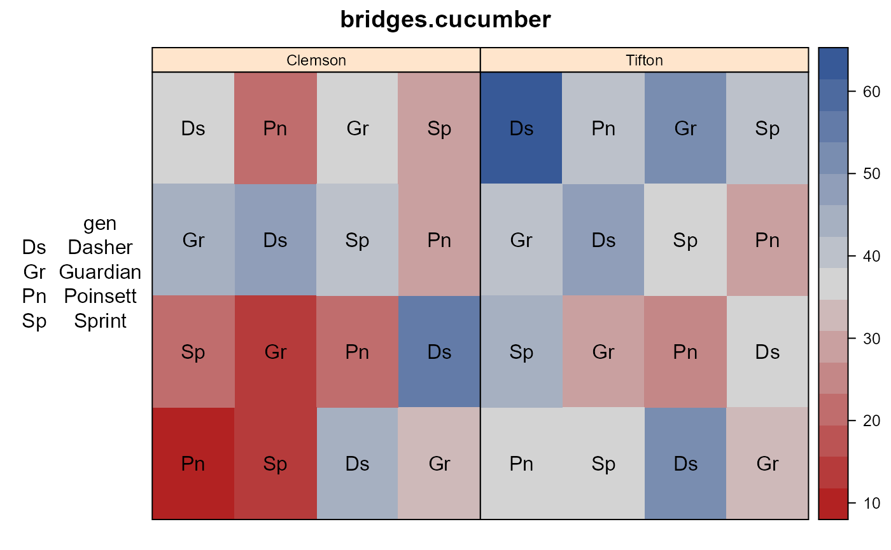
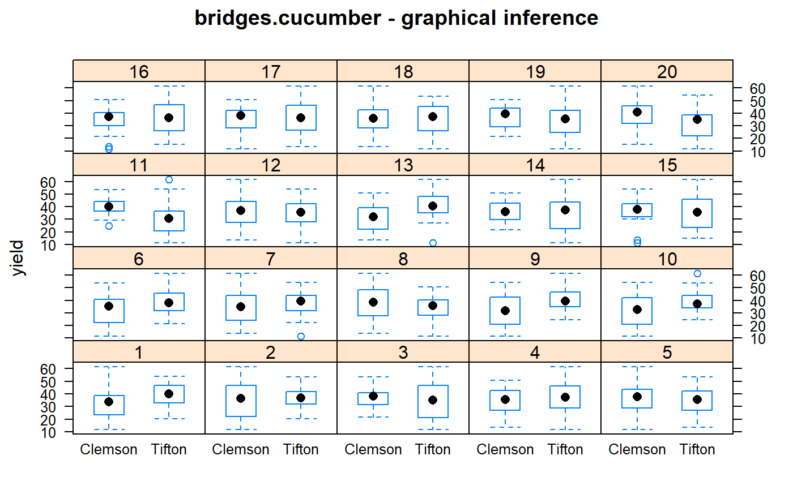

bridges.cucumber.RdCucumber yields in latin square design at two locs.
A data frame with 32 observations on the following 5 variables.
loclocation
gengenotype/cultivar
rowrow
colcolumn
yieldweight of marketable fruit per plot
Conducted at Clemson University in 1985. four cucumber cultivars were grown in a latin square design at Clemson, SC, and Tifton, GA.
Separate variances are modeled each location.
Plot dimensions are not given.
Bridges (1989) used this data to illustrate fitting a heterogeneous mixed model.
Used with permission of William Bridges.
William Bridges (1989). Analysis of a plant breeding experiment with heterogeneous variances using mixed model equations. Applications of mixed models in agriculture and related disciplines, S. Coop. Ser. Bull, 45--51.
# \dontrun{ library(agridat) data(bridges.cucumber) dat <- bridges.cucumber dat <- transform(dat, rowf=factor(row), colf=factor(col)) libs(desplot) desplot(dat, yield~col*row|loc, # aspect unknown text=gen, cex=1, main="bridges.cucumber")# Graphical inference test for heterogenous variances libs(nullabor) # Create a lineup of datasets fun <- null_permute("loc") dat20 <- lineup(fun, dat, n=20, pos=9) # Now plot libs(lattice) bwplot(yield ~ loc|factor(.sample), dat20, main="bridges.cucumber - graphical inference")libs(asreml) # asreml4 ## Random row/col/resid. Same as Bridges 1989, p. 147 m1 <- asreml(yield ~ 1 + gen + loc + loc:gen, random = ~ rowf:loc + colf:loc, data=dat)#> Model fitted using the gamma parameterization. #> ASReml 4.1.0 Mon Jan 11 17:07:53 2021 #> LogLik Sigma2 DF wall cpu #> 1 -69.1828 62.4832 24 17:07:53 0.0 #> 2 -68.2565 48.7835 24 17:07:53 0.0 #> 3 -67.6053 38.4916 24 17:07:53 0.0 #> 4 -67.3668 32.3653 24 17:07:53 0.0 #> 5 -67.3559 31.5313 24 17:07:53 0.0 #> 6 -67.3558 31.4799 24 17:07:53 0.0#> effect component std.error z.ratio bound %ch #> rowf:loc 31.62 23.02 1.4 P 0 #> colf:loc 18.08 15.33 1.2 P 0 #> units!R 31.48 12.85 2.4 P 0## effect component std.error z.ratio bound ## rowf:loc 31.62 23.02 1.4 P 0 ## colf:loc 18.08 15.32 1.2 P 0 ## units(R) 31.48 12.85 2.4 P 0 ## Random row/col/resid at each loc. Matches p. 147 m2 <- asreml(yield ~ 1 + gen + loc + loc:gen, random = ~ at(loc):rowf + at(loc):colf, data=dat, resid = ~ dsum( ~ units|loc))#> Multi-section model using the sigma parameterization. #> ASReml 4.1.0 Mon Jan 11 17:07:54 2021 #> LogLik Sigma2 DF wall cpu #> 1 -68.5253 1.0 24 17:07:54 0.0 #> 2 -66.8318 1.0 24 17:07:54 0.0 #> 3 -66.4698 1.0 24 17:07:54 0.0 #> 4 -66.3601 1.0 24 17:07:54 0.0 #> 5 -66.3562 1.0 24 17:07:54 0.0#> effect component std.error z.ratio bound %ch #> at(loc, Clemson):rowf 32.32 36.54 0.88 P 0.1 #> at(loc, Tifton):rowf 30.92 28.46 1.1 P 0.4 #> at(loc, Clemson):colf 22.55 28.78 0.78 P 0 #> at(loc, Tifton):colf 13.62 14.59 0.93 P 0 #> loc_Clemson!R 46.85 27.05 1.7 P 0 #> loc_Tifton!R 16.11 9.298 1.7 P 0## effect component std.error z.ratio bound ## at(loc, Clemson):rowf 32.32 36.58 0.88 P 0 ## at(loc, Tifton):rowf 30.92 28.63 1.1 P 0 ## at(loc, Clemson):colf 22.55 28.78 0.78 P 0 ## at(loc, Tifton):colf 13.62 14.59 0.93 P 0 ## loc_Clemson(R) 46.85 27.05 1.7 P 0 ## loc_Tifton(R) 16.11 9.299 1.7 P 0 predict(m2, data=dat, classify='loc:gen')$pvals#> Multi-section model using the sigma parameterization. #> ASReml 4.1.0 Mon Jan 11 17:07:54 2021 #> LogLik Sigma2 DF wall cpu #> 1 -66.3562 1.0 24 17:07:54 0.0 #> 2 -66.3562 1.0 24 17:07:54 0.0 #> 3 -66.3562 1.0 24 17:07:54 0.0#> #> Notes: #> - The predictions are obtained by averaging across the hypertable #> calculated from model terms constructed solely from factors in #> the averaging and classify sets. #> - Use 'average' to move ignored factors into the averaging set. #> - The ignored set: rowf,colf #> #> #> loc gen predicted.value std.error status #> 1 Clemson Dasher 45.55000 5.042806 Estimable #> 2 Clemson Guardian 31.62500 5.042806 Estimable #> 3 Clemson Poinsett 21.42500 5.042806 Estimable #> 4 Clemson Sprint 25.95000 5.042806 Estimable #> 5 Tifton Dasher 50.48460 3.893635 Estimable #> 6 Tifton Guardian 38.71697 3.893635 Estimable #> 7 Tifton Poinsett 33.01487 3.893635 Estimable #> 8 Tifton Sprint 39.17952 3.893635 Estimable## loc gen predicted.value std.error status ## 1 Clemson Dasher 45.6 5.04 Estimable ## 2 Clemson Guardian 31.6 5.04 Estimable ## 3 Clemson Poinsett 21.4 5.04 Estimable ## 4 Clemson Sprint 26 5.04 Estimable ## 5 Tifton Dasher 50.5 3.89 Estimable ## 6 Tifton Guardian 38.7 3.89 Estimable ## 7 Tifton Poinsett 33 3.89 Estimable ## 8 Tifton Sprint 39.2 3.89 Estimable # Is a heterogeneous model justified? Maybe not. # m1$loglik ## -67.35585 # m2$loglik ## -66.35621 # }